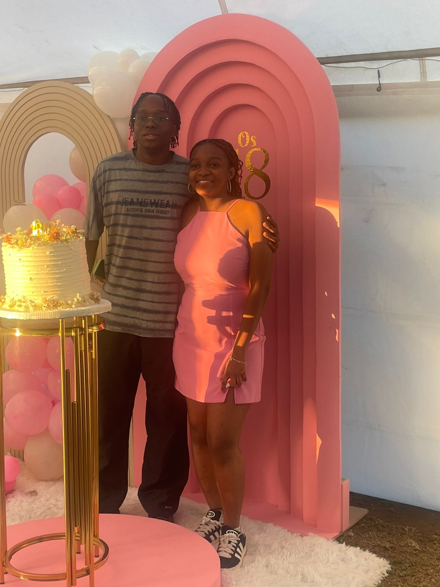
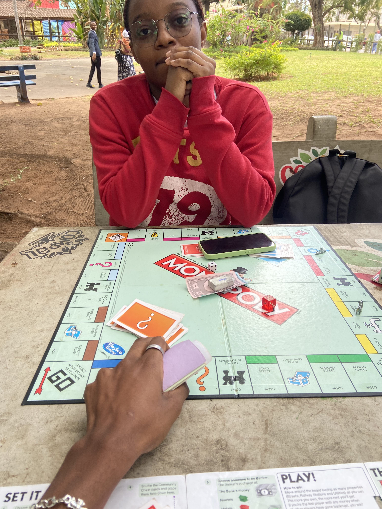

O teu jeito de ser
Energia contagiante, linda e deslumbrante.
Algo tem crescido além do portão, só para você.
Errado — tente novamente. Hint: O pin/código é a nossa data
Um jardim, crescendo em silêncio para você
está em plena floração hoje
Foi numa Quinta-feira qualquer em que você se tornou a razão pela qual meus dias fazem sentido. Hoje, o jardim inteiro se volta para você.
Entre no jardimColeção de espécimes
Cinco momentos que eu não podia deixar desaparecer, preservados exatamente como eram.




role devagar, devagar — nada aqui tem pressa
Anotações de campo
Uma lista de trabalho, assim como o jardim.
Energia contagiante, linda e deslumbrante.
Alto, inesperado, totalmente sem filtro — é o som que eu escolheria em repetição em vez de qualquer outro.
Você percebe as pequenas coisas — quem está quieto, quem está cansado, quem precisa do melhor lugar. Você simplesmente é isso.
Você carrega semanas difíceis como se não pesassem nada e ainda aparece suave para todo mundo.
Estar perto de você parece menos um lugar que visito e mais um lugar em que eu sempre deveria ter terminado.
Sua voz, suas frases pela metade, a forma como você pensa em voz alta.
Selado com uma pétala
Você é a razão pela qual meus dias parecem significar algo. Toda manhã em que eu acordo é um pouco mais leve só de saber que você existe — e, honestamente, amor, esse é o maior presente que já recebi.
No seu aniversário, quero que você saiba que nenhuma palavra é suficiente para descrever o quanto sou grato por te conhecer, por te amar, e por compartilhar este mundo com você.
Você é linda — não apenas por fora, mas no jeito que você ri, no jeito que você cuida, no jeito de ser você mesma sem nunca pedir que alguém aceite mais do que pode dar.
Espero que este ano te traga tudo o que você tem sonhado. Espero que você continue crescendo, continue brilhando, e saiba sempre que onde quer que você esteja — você sempre terá um lugar para voltar.
Nossa trilha sonora
A faixa que tocou enquanto este jardim crescia. Aperte play e deixe ela ficar ao fundo.
Próxima florada
A última página, a primeira de muitas
apesar de ser muito atrasado mas te desejo um...
"Você é o minha hoje, e todos os meus amanhãs."
Um brinde a você, e a cada ano em que este jardim fica um pouco mais selvagem (Emoji de Riso).🌹